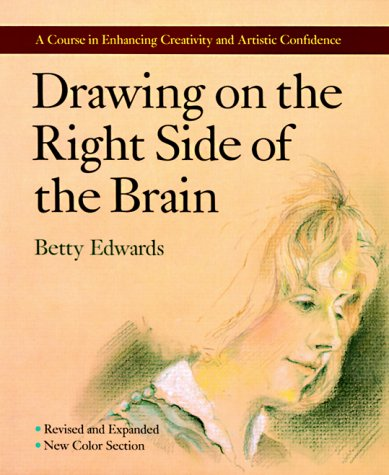
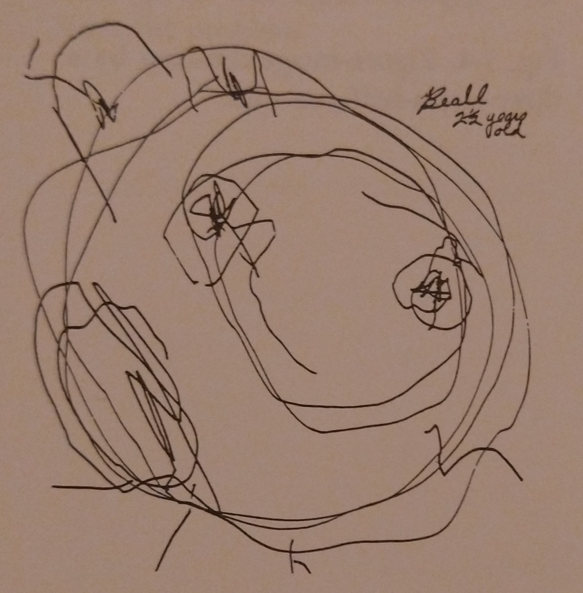
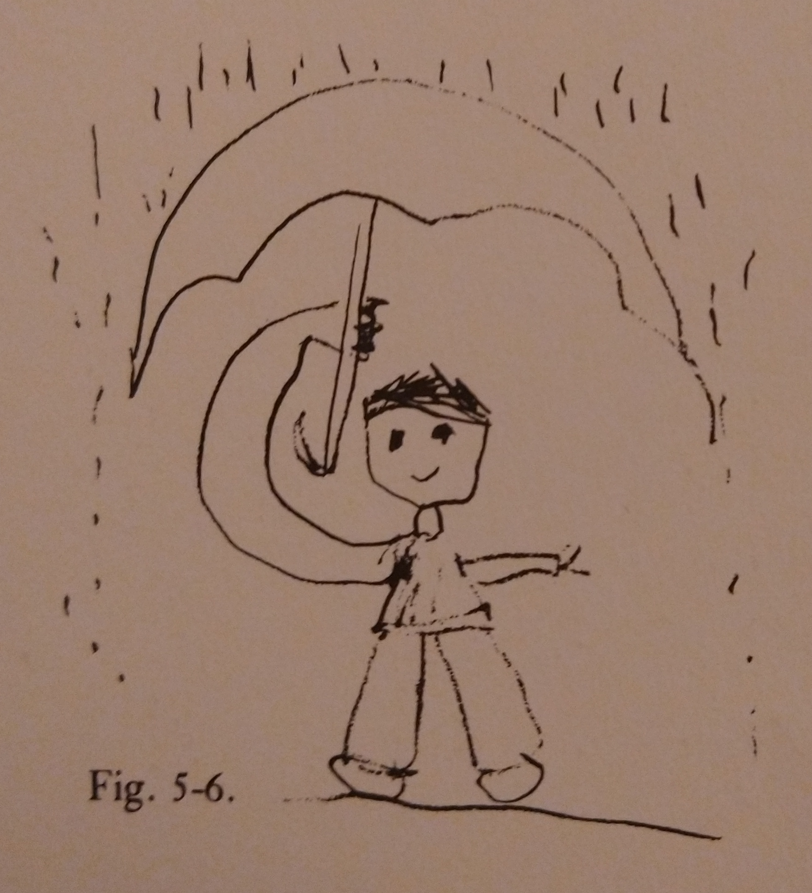
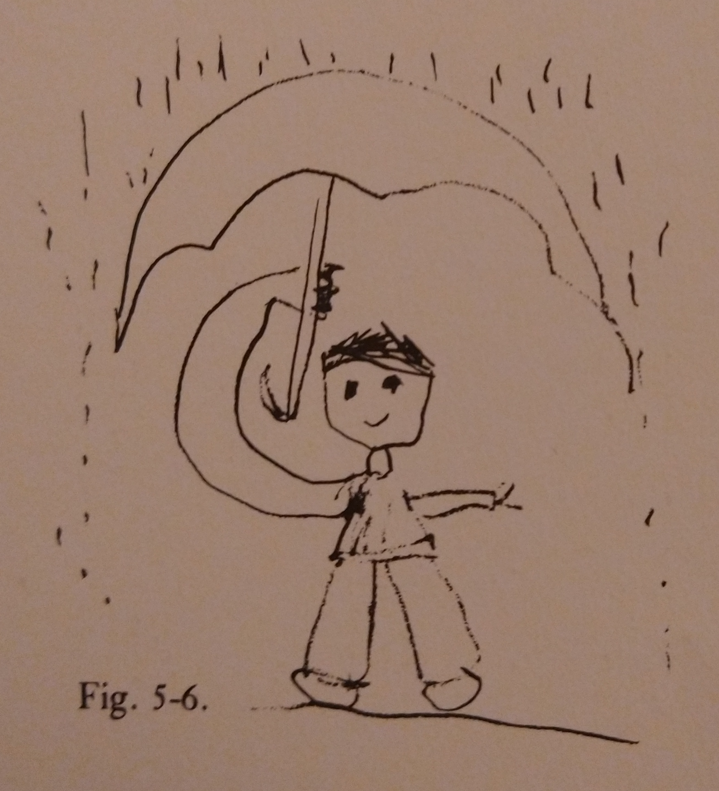
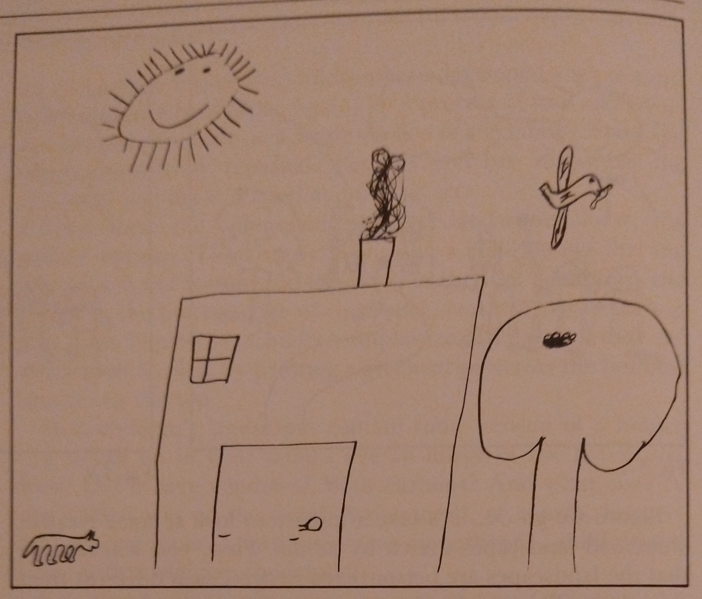

CP540: Project planning, management and methods
Critical review of information
L Lue
Department of Chemical and Process Engineering
University of Strathclyde
Overview
- Scientific publishing
- Review of note taking and reading strategies
- Critical review of information
- Focusing your report topic
Publication process
- Authors submit a manuscript to a journal
- The editor decides whether the manuscript is appropriate for the journal.
- The manuscript is sent to be reviewed by experts in the field.
- Referees send back their written critique of the manuscript to the referee.
- Editor decides what action to take on the manuscript and informs the authors.
- Authors respond to the editor, addressing the referee comments and making changes to the manuscript if needed.
- Editor makes final decision.
Famous controversies in science
- polywater, 1966
- water memory, 1988
- Cold fusion, 1989
- Faster-than-light neutrino anomaly, 2011
Recent "controversies"
- Room temperature superconductivity, 2023
- reproducibility crisis in psychology
- Diederik Stapel
- Tilburg University
- Dan Ariely:
- MIT & Duke University
- Francesca Gino
- Harvard University
- Diederik Stapel
Commercial scientific publishing
Commercial publishers
- Elsevier
- Wiley
- Taylor & Francis
- Springer
- SAGE
Profit margins
Open access publishing
- traditional journals
- Gold open access
- Green open access
- on-line publishing
- https://arxiv.org
- eLife
Why do researchers publish?
- genuine interest in their subject
- prestige
- their performance is rated by bibliometrics
- research funding is based on bibliometrics
Deans can't read but they can count.
When a measure becomes a target, it ceases to be a good measureCharles Goodhart
Issues in publishing
- pressure for novelty
- conflicts of interest
- medical ghostwriting
- predatory publishers
- open access charges
- special issues
- authorships
- for sale
- fake co-authors
- referee clubs
Scientific watchdogs
- Retraction Watch:
- PubPeer: https://pubpeer.com
- Data Colada: https://datacolada.org/
The future of scientific publishing?
- arxiv
- ResearchGate
- ScienceOpen
- YouTube
Review of note taking

Strategies for reading
- reading plan
- reading purpose
- skimming a difficult text
- reading for new vocabulary
- reading for facts
- reading for ideas
- targeted re-reading
- chat with others
Critical reading of literature
What does it mean to be critical?
- being negative?
- Right vs Wrong?
- True vs False?
- Good vs Bad?
Godel's incompleteness theorem

Understanding through models and stories
- models
- symbols
- assumptions
Drawing
Symbols


Portraits
 


Landscapes

Complicated symbols

Just so stories
Origin of money
Critical reading of literature
What does it mean to be critical?
- understand different perspectives and framing of an issue
- identify key concepts
- identify underlying assumptions
- distinguish evidence from conclusions
- connect with other work
- be an active reader
Strategies for active reading
- Activating and using background knowledge
- Generating and asking questions
- Making inferences and predicting
- Summarizing and visualizing
- Monitoring and understanding
Nothing is surprising an ignorant person.
Basic questions
- Authority
- Purpose
- Publication & format
- Relevance (positioning of the paper and the author)
- Date of publication (or creation)
- Documentation
- Coverage
- Writing style
Questions to deepen your reading
- evidence presented (as opposed to the conclusions)
- assumptions (perspective)
- concepts used by the author
- interpretations
- impact of the argument
Choosing your topic
"...the more you narrow the field, the better and more safely you will work."
Umberto Eco, How to Write a Thesis
What does it mean to be scientific?
What Does It Mean to Be Scientific?
- The research deals with a specific object, defined so that others can identify it.
- The research says things that have not yet been said about this object, or it revises the things that have already been said from a different perspective.
- The research is useful to others.
- The research provides the elements required to verify or disprove the hypothesis it presents, and therefore it provides the foundation for future research.
Potential topics
- The fate of plastics collected for recycling;
- The benefits and issues with agrivoltaics.
- The benefits and shortcomings of waste-to-energy;
- Potential of waste heat recovery with Stirling engines;
- Advantages and practical issues for the use of heat pumps for domestic heating.